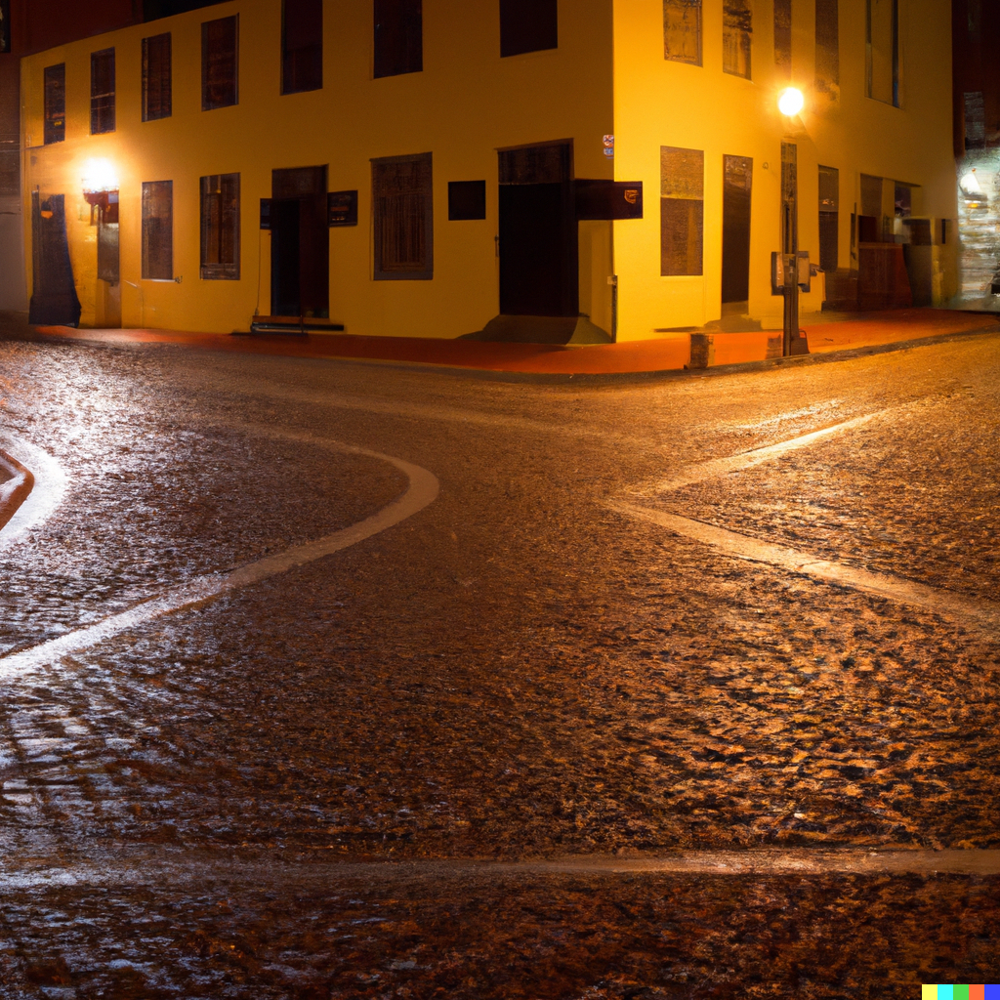

Coke en stock
Chapitre 2
Rue déserte
Le dealer a fixé le rendez vous au centre-ville ce qui vous exaspère car vous avez du faire pas mal de chemin,
de plus la nuit est en train de tomber les rues se vident et vous devez vous dépêcher car vous êtes déjà en manque.
Il vous reste quelques pâtés de maison pour vous rendre au rendez vous avec le dealer, vous arrivez maintenant à un croisement:
le chemin de droite est plus long mais relativement calme ,tandis le chemin de gauche est plus rapide
mais il y'a souvent des gens qui rodent que vous aimeriez éviter pour de très nombreuses raisons,
la sûreté est-elle plus importante que la rapidité ? ou l’inverse ?
Votre choix :
Prendre le chemin de gauche Prendre le chemin de droite

Choix précèdent